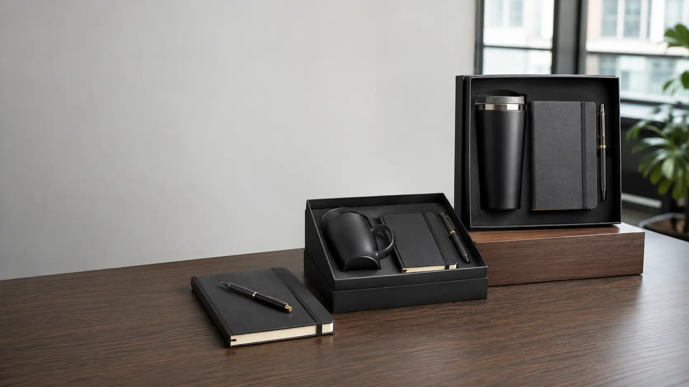

When buyers search for corporate gifts that do not suck, they are usually trying to avoid three mistakes: low-quality products, loud logos and gifts that do not fit the recipient. The best corporate gifts are practical, easy to use and connected to a real business moment.
This guide is based on recurring buyer questions in business, HR, sales and marketing communities: What do people actually keep? What feels premium without being wasteful? How do we brand gifts without making them awkward to use?

The Short Answer
A corporate gift usually works when it is useful, recipient-safe, lightly branded and packed like a complete set. A tumbler, notebook, pen and card can outperform a more expensive but random item if the set is easier to use and better presented.
What Makes Corporate Gifts Feel Bad?
- Products that break, stain, smell odd or feel disposable.
- Oversized logos that make people avoid using the item outside work.
- Food-only gifts without allergy, dietary or shipping planning.
- One-size apparel without size collection or backup options.
- No card, story or reason for the gift.
Better Gift Directions
| Use Case | Better Direction | Why It Works |
|---|---|---|
| Employees | Insulated bottle, notebook, tote, small desk item, welcome card | Useful during onboarding and daily work |
| Clients | Tumbler, premium notebook, metal pen, thank-you card, rigid box | Professional, giftable and easy to brand subtly |
| Trade shows | Tote, pen, notebook, lanyard, QR insert card | Easy to distribute and useful during the event |
| Executives | Fewer higher-quality items with restrained logo placement | Feels considered instead of promotional |
Use Small Logos for Gifts People Will Keep
For employee and client gifts, subtle branding often performs better than large product logos. Put a small logo on the item, then use the card, belly band, sleeve or box lid for stronger brand storytelling. This makes the product more usable while still keeping the gift connected to your company.
Choose Products Around the Recipient
For office teams, notebooks, pens, mugs, bottles and desk accessories are safe choices. For remote employees, add useful home-office items or a bag. For clients, choose fewer products and better packaging. For event attendees, prioritize lightweight items that help them during the day.
Plan the Gift as a Set, Not a Pile of Items
A strong corporate gift set needs a product mix, logo placement plan, insert card, packaging method and delivery schedule. The packaging matters because it turns separate products into a clear branded experience.
Quote checklist: recipient type, quantity, budget per set, logo method, packaging style, delivery country and target date.
Related Pages
- Custom corporate gift boxes
- Client thank-you gift boxes
- Company swag kits
- Bulk corporate gifts
- Custom gift box packaging
Next Step
Sendora Gift can recommend a product mix, branding method and packaging direction based on your recipient, budget, quantity and delivery deadline.